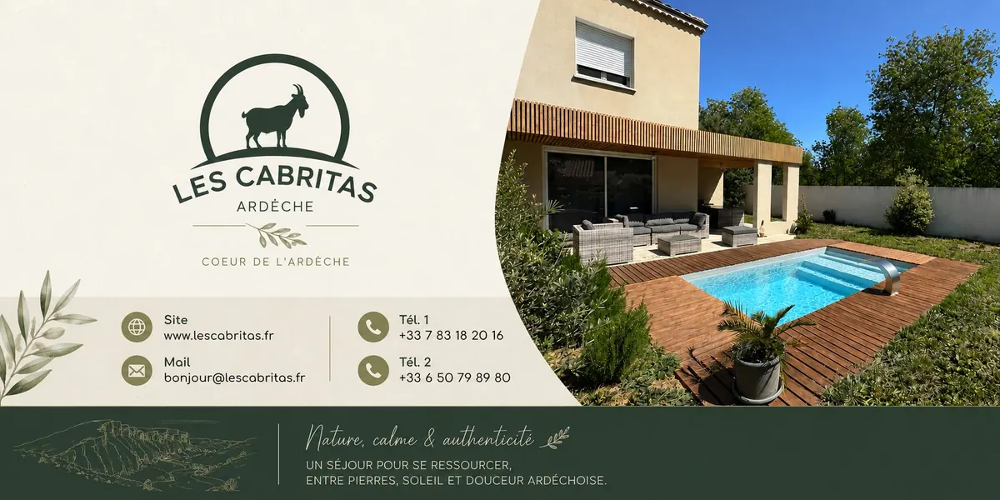

Galerie


Bienvenue au gîte Les Cabritas, une maison neuve située à Saint-Alban-Auriolles, au cœur du Sud-Ardèche, à environ 10 minutes de Vallon-Pont-d'Arc et 5 minutes de Ruoms et de Labeaume.
Idéalement placée, la maison est à proximité des commerces (supérette, boulangerie, restaurants), des rivières et des grands sites touristiques des Gorges de l'Ardèche.
Vous pourrez profiter de nombreuses randonnées et de belles balades à vélo depuis le gîte, pour découvrir la région à votre rythme.
Belle maison neuve de 70 m² implantée sur un grand terrain de 850 m². Piscine bois hors sol de 10 m², profondeur 1m05, équipée d'une échelle sécurisée. Piscine sans clôture ni verrou : la vigilance des parents est recommandée pour les jeunes enfants.
Deux chambres confortables :
Linge de lit 100 % coton et serviettes de bain fournis. Kit d'accueil fourni (papier toilette, torchon, une dosette de café par adulte, tapis de bain).
Depuis Les Cabritas, découvrez les plus beaux sites naturels et touristiques des Gorges de l'Ardèche et de ses environs, classés par temps de trajet depuis le gîte.

Boucle de 6 km à travers la garrigue, entre mégalithes millénaires.

La ferme-musée sur l'enfance ardéchoise d'Alphonse Daudet.

Maisons troglodytes, calades et jardins suspendus sur la Beaume.

Une forêt de rochers karstiques aux formes étonnantes.

Un des plus beaux villages de France, perché au-dessus de la rivière.

Une route creusée dans la roche, canoë et via ferrata.

L'arche naturelle emblématique des Gorges de l'Ardèche.

La « grotte aux diamants », entre Gard et Ardèche.

Un marché réputé et la porte d'entrée du Bois de Païolive.

Un canyon sauvage réputé pour ses descentes en canoë.

Cité médiévale née de ses mines d'argent.

Un château perché au-dessus d'un des Plus Beaux Villages de France.

Une immersion fascinante dans l'art préhistorique classé à l'UNESCO.

La Haute Corniche et ses belvédères sur le canyon.

Village médiéval perché, classé Plus Beaux Villages de France.

Sous-préfecture de l'Ardèche et son château sur neuf siècles.

Galeries immenses et concrétions spectaculaires, Grand Site de France.

Ville thermale réputée pour ses sources et son marché.

Grotte concrétionnée et belvédère vertigineux sur les gorges.

Ancienne capitale gallo-romaine des Helviens.

Un hameau secret des Cévennes et sa splendide église romane.

Randonnée, châtaigneraies et volcans, Géoparc mondial UNESCO.

Un village médiéval sauvé pierre par pierre par des bénévoles.

La Chaussée des Géants et ses impressionnantes orgues basaltiques.

Une voie verte exceptionnelle pour les balades à vélo ou à pied.

Le célèbre volcan d'où prend sa source la Loire.

Des paysages magnifiques et des eaux turquoise à découvrir.

Une balade authentique à bord d'un train à vapeur historique.
Situé à Saint-Alban-Auriolles au cœur du Sud-Ardèche, Les Cabritas est un gîte avec piscine privée idéal pour les couples, familles et amis souhaitant découvrir les Gorges de l'Ardèche dans un environnement calme et confortable.
Les Cabritas constituent également un point de départ idéal pour découvrir Vallon-Pont-d'Arc, le Pont d'Arc, Ruoms, Labeaume, la Grotte Chauvet 2, Balazuc et les plus beaux villages du Sud-Ardèche.
Que vous recherchiez un gîte en Ardèche avec piscine privée, une location de vacances en famille, un séjour nature ou un week-end de détente au cœur des gorges, Les Cabritas vous accueillent dans un cadre calme et confortable.
Les Cabritas ont été imaginées comme un lieu de détente, de calme et de reconnexion au cœur du Sud-Ardèche.
Ici, nous privilégions les séjours paisibles, le confort, le respect des lieux et l'authenticité. Que vous soyez en couple, en famille ou entre amis, tout est pensé pour profiter pleinement de la nature, de la piscine privée et des richesses de notre territoire.
Afin de préserver cette atmosphère appréciée de nos voyageurs et de notre voisinage, les fêtes et événements ne sont pas autorisés. Les animaux ne sont pas admis et nous vous remercions de respecter les lieux comme s'ils étaient les vôtres.
Bienvenue aux Cabritas, votre parenthèse en Sud Ardèche.

Je suis Axel BOGIRAUD et je serai votre interlocuteur privilégié avant et pendant votre séjour.
Passionné par l'Ardèche, je serai ravi de vous orienter vers les plus beaux sites, restaurants, marchés et activités de la région afin que votre séjour soit inoubliable.
Je reste disponible avant votre arrivée et pendant toute la durée de votre séjour afin de vous conseiller, partager mes bonnes adresses et répondre à toutes vos questions.
⭐ Déjà plusieurs saisons d'accueil et de nombreux voyageurs satisfaits depuis 2022.
Consultez nos disponibilités en temps réel.
Pour toute réservation ou demande d'information,
contactez-nous directement par téléphone ou par email.
Un « jour de changement » signifie que le séjour précédent se termine ce matin-là (départ avant 10h) et qu'un nouvel arrivant est attendu à partir de 16h : ces deux demi-journées sont donc bien disponibles séparément.
